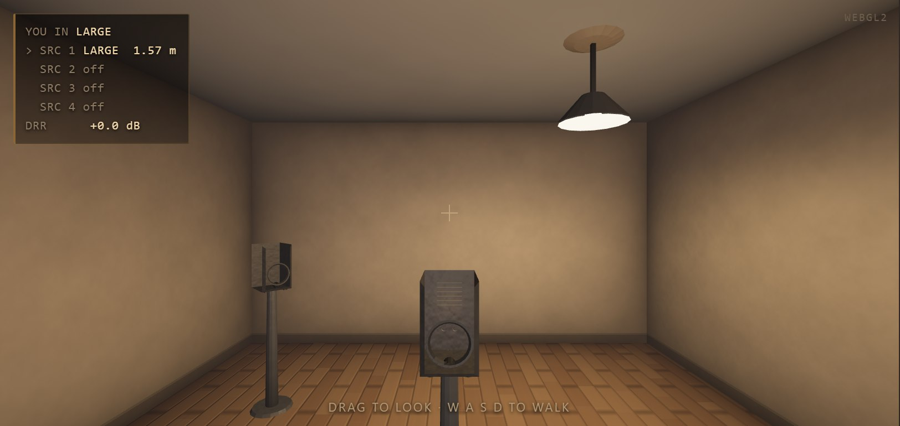

Getting about
Walk, look, drag


Turning your head
Facing is not decoration. The binaural rendering is driven by the direction each arrival comes from relative to your head, so turning on the spot moves every source around you — including the ones you cannot see, behind a shut door.
Where you may stand
Anywhere inside the three rooms. The area north-west of the living room is outside the flat and is solid; the plan will not let you drag there, and if automation sends you there the engine puts you back in the nearest room. Walking through an open doorway is seamless: for 0.4 m either side of the door the engine hears both rooms at once and hands one to the other (page 15).
Take hold of the handle
Every door in the 3D view has a handle. Walk up to one — within 2.5 m, in front of you and not through a wall — and it lights up as the pointer crosses it. Click to slam it or throw it wide; drag to swing it to anywhere in between. Grabbing a handle is not a look, so the room does not spin while you do it.
The keys always win
W A S D and the arrow keys walk and turn even when a menu or a fader has the focus. Set a material, then walk — the key never reaches the menu behind it. A key typed into a text field is still the field's.